Bjagi, dreifni og orsakasamhengi
Mikilvæg hugtök í heimi gervigreindar
Orsakasamhengi og gagnabjagi
- Fólk á sjúkrahúsum er að jafnaði veikara en annað
- Eru sjúkrahús slæm fyrir heilsuna?

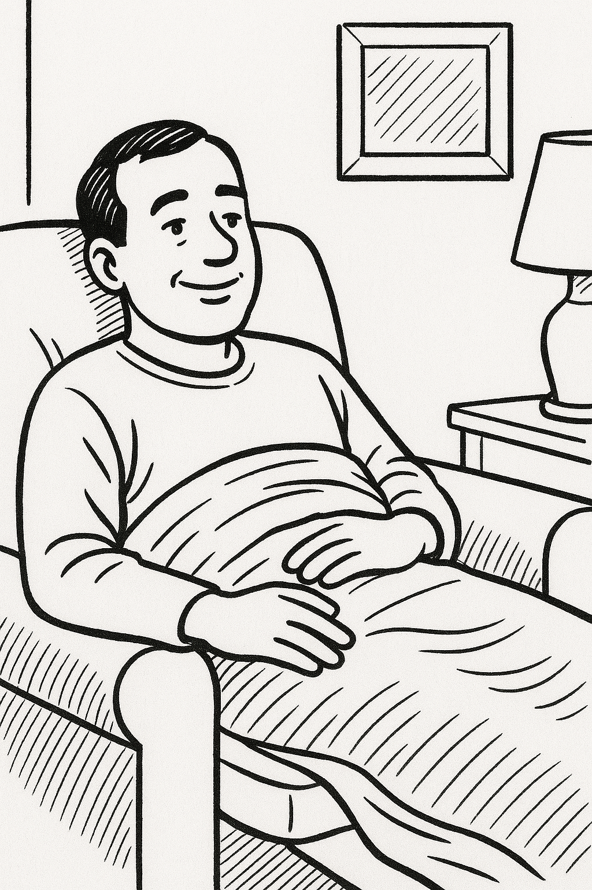
Bjagi og dreifni
Tvær tegundir skekkju
- Bjagi (bias):
- Kerfisbundin skekkja
- Breytist ekki þótt athugunum fjölgi
- Dæmi: Einfalt líkan sem missir af mikilvægum mynstrum
- Dreifni (variance):
- Tilviljanakennd skekkja
- Minnkar þegar athugunum fjölgar
- Dæmi: Flókið líkan sem lærir hávaða í gögnunum
Orsakasamhengi og bjagi
- Bjagi er aðalvandamálið þegar orsakasamhengi er rangt
- Fleiri gögn laga ekki kerfisbundinn bjaga
- Dæmi: Sjúkrahúsdæmið sýnir bjaga vegna vals
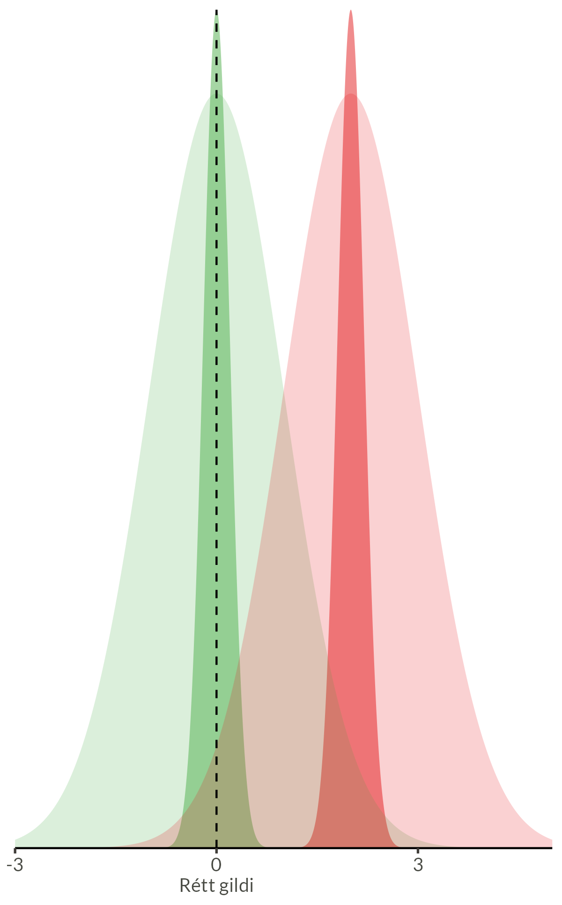
Gagnabjagi

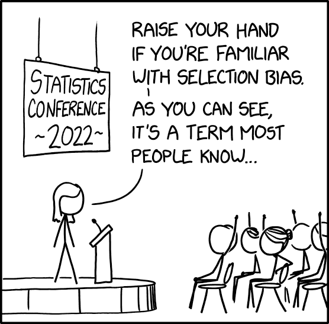
Er þetta dreifni eða bjagi?
Hvað getum við gert?
- Íhlutun í heiminum
- Handahófskennd úthlutun
- Jafnar áhrifabreytur
- “Gold standard” orsakarannsókna
- Skynsamlega valin gögn
- Náttúrulegar tilraunir
- Samsvörun (matching)
- Gæði umfram magn
- Orsakagreining
- Tilkynnum forsendur
- Leiðum út besta líkan
Ronald Fisher (1890 - 1962)
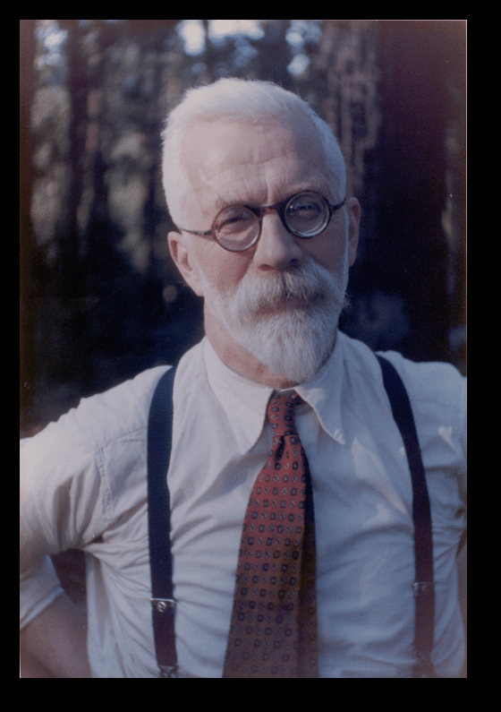
“In relation to the test of significance, the experimenter is often not so much testing a hypothesis as interrogating Nature, asking her, as it were, a question; and randomization is the device which ensures that Nature’s answer shall be a valid one.”
— Ronald A. Fisher, The Design of Experiments (1935)
Slembitilraunir
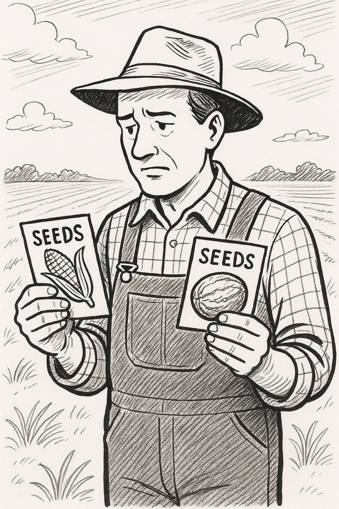

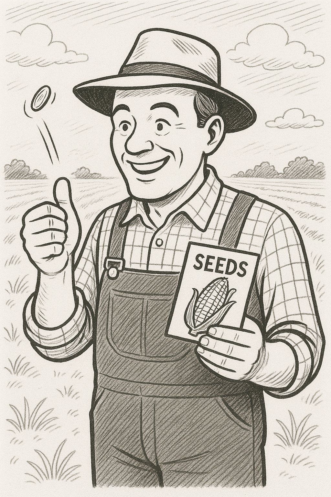
Samsvörun (Matching)
Hvað er samsvörun?
- Aðferð til að para saman einstaklinga sem eru líkir á öllum mikilvægum þáttum nema meðferðinni sem við rannsökum
- Markmið: Skapa jafnvægi í áhrifaþáttum milli samanburðarhópa
- Grundvallaratriði: Bera saman sambærilegar einingar til að draga ályktanir um orsakasambönd
Dæmi um nálgun
- Para saman skóla með svipað hlutfall nemenda úr erfiðum aðstæðum
- Bera saman sjúklinga með svipaða sjúkrasögu og aldur
- Bera saman íbúa með svipaða félagslega stöðu
Öryggisbelti og bílslys: Flókin orsakasamhengi
- Spurning: Draga öryggisbelti úr dánartíðni í bílslysum?
- Vandamál: Ekki hægt að gera tilraun með slembiröðun
- Flækjustig:
- Margir þættir hafa áhrif á alvarleika slysa (hraði, vegaðstæður, viðbragðstími)
- Fólk sem notar belti er líklega varfærnara almennt
Venjuleg greining (með bjaga)
Algeng nálgun
- Bera saman dánartíðni:
- Fólk með belti vs. ekki með belti
- Vandamál:
- Varfærnir ökumenn nota belti
- Áhættusæknir ökumenn nota síður belti
Náttúruleg tilraun
- Greindi slys þar sem tveir voru í bíl
- Ein manneskja með belti, önnur án
- Önnur manneskjan lifði, hin lést
- Margir áhrifaþættir eru þá eins fyrir báða:
- Hraði bílsins
- Vegaðstæður
- Árekstrarhornið
- Ökumaðurinn
Glæpahneigð og… nefhorn?
Wu og Zhang (2016)
- Rannsakendur þróuðu gervigreindarlíkan sem þeir fullyrtu að gæti:
- Greint “afbrotamenn” frá “óflekkuðum” einstaklingum
- Náð 89,5% nákvæmni
- Fundið líffræðilegar vísbendingar um “meðfædda afbrotahneigð”
- 1800 myndir af kínverskum karlmönnum
- 700 sakfelldir glæpamenn
- 1100 almennir borgarar
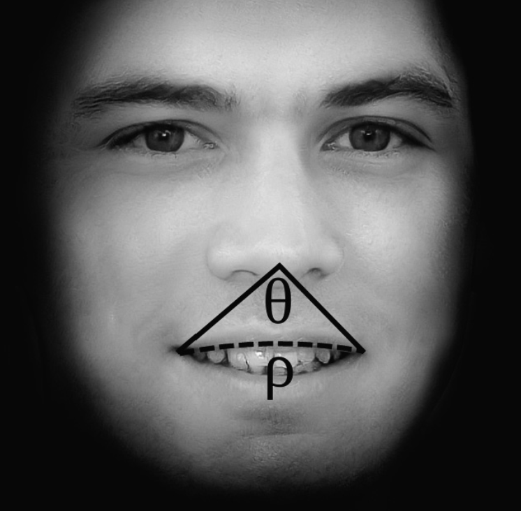
The algorithm finds that criminals have shorter distances between the inner corners of the eyes, smaller angles θ between the nose and the corners of the mouth, and higher curvature ρ to the upper lip.
Bergstrom & West í bókinni Calling Bullshit
Grundvallargallar rannsóknarinnar
- Bjagi í gögnunum:
- Myndir “afbrotamanna” voru úr gagnagrunni lögreglu
- Myndir “óflekkuðra” einstaklinga voru úr almennum ljósmyndum
- Rangur mælikvarði:
- Líkanið greindi í raun ekki “afbrotahneigð”
- Það greindi mun á skilríkjum og venjulegum myndum
A machine learning algorithm is only as good as its training data, and these training data are fundamentally flawed. […] The algorithm in this paper is not picking up some underlying physical structures associated with criminality.
Bergstrom & West í bókinni Calling Bullshit
Orsakagreining

Behind every causal conclusion there must lie some causal assumption that is not testable in observational studies.
Judea Pearl
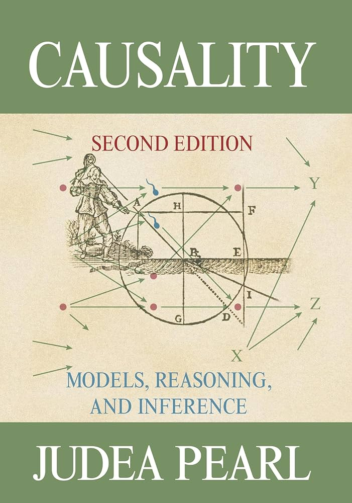
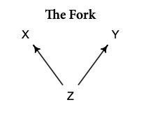
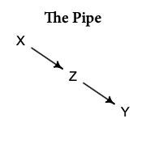
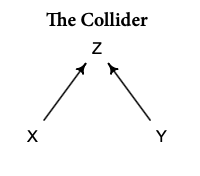
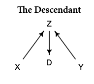
Gervigreindarspár og ákvarðanir
- Útkoma sjúklinga eftir inflúensu?
- Líkanið spáði að astmasjúklingar væru í minni áhættu vegna lungnabólgu
- Hætta á of háum blóðþrýstingi
- Sjúklegar með háan blóðþrýsting eru á lyfjum
- Líkanið ruglast ef það er ekki tekið með í reikninginn
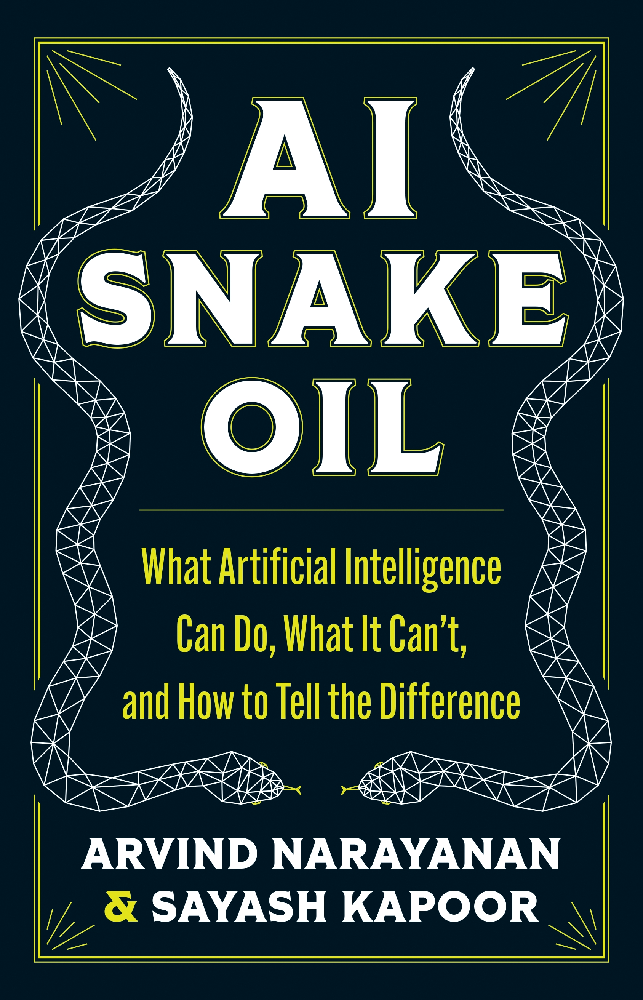
This issue arose in part because the researchers relied on existing data rather than new data collected specifically for the task. Generally, collecting data is expensive and time-consuming. So, some AI developers claim that existing data is enough to make good decisions.
Narayanan & Kapoor - AI Snake Oil
Samantekt
Lykilhugtök og lærdómur
- Bjagi og dreifni
- Bjagi: Kerfisbundin skekkja sem fleiri gögn laga ekki
- Dreifni: Tilviljanakennd skekkja sem minnkar með fleiri gögnum
- Orsakasamhengi og gagnabjagi
- Gagnabjagi getur leitt til rangra ályktana um orsakasamhengi
- Mikilvægt að greina á milli fylgni og orsakasamhengis
- Lausnir og aðferðir
- Slembitilraunir (Ronald Fisher)
- Samsvörun (matching) sambærilegra eininga
- Vönduð orsakagreining
- Lærdómur fyrir gervigreind
- Gæði gagna skipta meira máli en magn
- Mikilvægt að skilja undirliggjandi orsakasamhengi
- Varast ber að draga ályktanir án þess að skilja bjaga í gögnunum